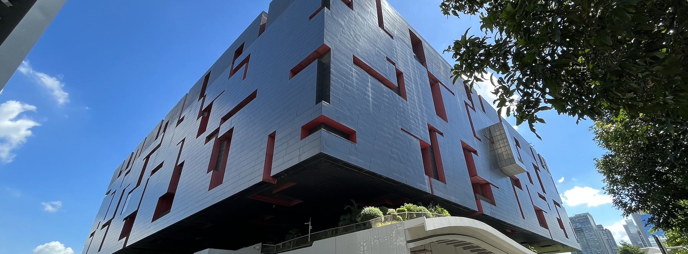

Guangdong museum
(广东博物馆)
Publications
-
Effective field theory for type II seesaw model --symmetric phase v.s. broken phase--
Y. Liao, X. D. Ma, and Y. Uchida
arXiv:
2504.02580[hep-ph]
-
Freeze-in sterile neutrino dark matter in feeble gauged B-L model
O. Seto, T. Shimomura, and Y. Uchida
arXiv:
2404.00654[hep-ph]
-
Nambu-Goldstone Modes in Magnetized T2n Extra Dimensions
T. Hirose, H. Otsuka, K. Tsumura, and Y. Uchida
Phys. Rev. D 110 (2024) no.3, 035032
arXiv:
2403.16801[hep-th]
-
Pseudo-Nambu-Goldstone Dark Matter in SU(7) Grand Unification
C. W. Chiang, K. Tsumura, Y. Uchida and N. Yamatsu
Phys. Rev. D 109 (2024) no.5, 055040
arXiv:
2311.13753[hep-ph]
-
Pseudo-Nambu-Goldstone dark matter from non-Abelian gauge symmetry
H. Otsuka, T. Shimomura, K. Tsumura, Y. Uchida and N. Yamatsu
Phys. Rev. D 106 (2022) no.11, 115033
arXiv:
2210.08696[hep-ph]
-
The International Linear Collider: Report to Snowmass 2021
ILC International Development Team, Alexander Aryshev
arXiv:
2203.07622[hep-ph]
-
Ph.D. thesis: Generalization of Higgs effective field theory [not published]
Y. Uchida
Click Here
-
Scalar and fermion on-shell amplitudes in generalized Higgs effective field theory
R. Nagai, M. Tanabashi, K. Tsumura, Y. Uchida
Phys. Rev. D 104, 015001 (2021)
arXiv:
2102.08519[hep-ph]
,
-
Symmetry and geometry in a generalized Higgs effective field theory: Finiteness of oblique corrections versus perturbative unitarity
R. Nagai, M. Tanabashi, K. Tsumura, Y. Uchida
Phys. Rev. D 100, 075020 (2020)
arXiv:
1904.07618[hep-ph]
,
Copyright(c) 2016 ホームページサンプル株式会社 All Rights Reserved. Design by http://f-tpl.com